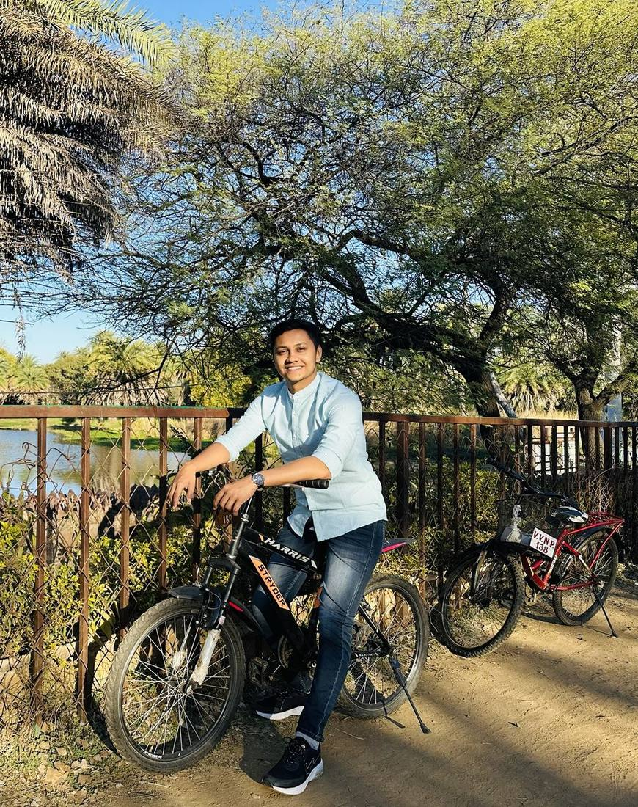
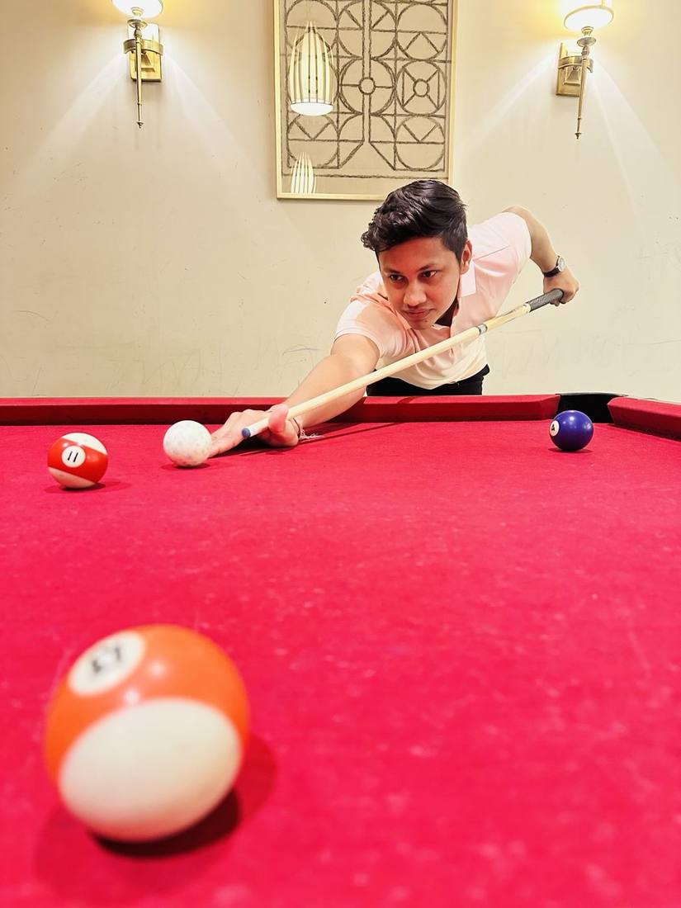

Outdoors
Badminton is the main event, but I like anything with movement, timing and just enough competition to make it interesting.
Sports are a useful antidote to overthinking: the next ball is already coming.


Good decisions start before the shot arrives. Position and patterns tell you what may happen next.
Perfect information does not exist mid-rally. Pick the highest-percentage move and commit.
A mistake becomes expensive only if you carry it into the next rally. Learn, reset, move.
“Competitive enough to care about the score. Self-aware enough to claim it's just exercise.”
Game OnGo back to the rest of the story.
Back to ProductFlixThrough My Lens